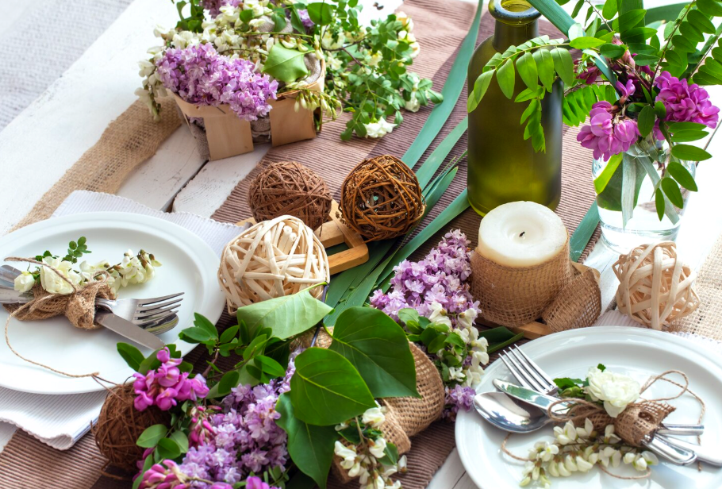

18 марта 2026
Весна на тарелке 🌿
Мы добавили в меню блюда, которые хочется есть медленно и с улыбкой.
Весна пришла и на нашу кухню. В La Trattoria Verde появились свежие блюда из сезонных продуктов: брускетта с томлеными томатами и базиликом, нежные равиоли с рикоттой и шпинатом и легкая панна котта с ягодным кули. Это меню про простые радости, длинные разговоры и ощущение, что ты немного в Тоскане.